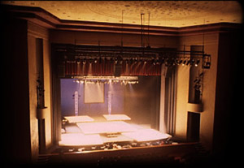
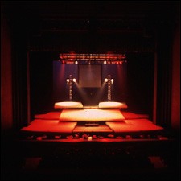
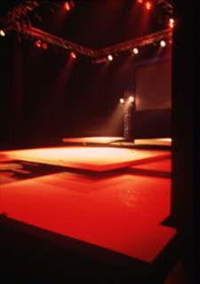

| Chess began as a concept album in 1983, a collaboration between Tim Rice and the male half of ABBA. Set in the mid-80s, the plot revolves around personal, political and romantic rivalries between Russian and American chess champions. |  | ||
|  | Their matches serve as metaphors, each illustrating a particular dichotomy — black vs. white, East vs. West, order vs. chaos. Scenes and locations cut from one to the next with cinematic frequency. Combined with a minimal budget, this gave rise to an abstract, sculptural set. It had to provide separate spaces onstage, so one scene could be pre-set in darkness while another was active. Sightlines suggested a raked series of levels, and an early-80s score demanded a period rock concert aesthetic. | ||
|
The final design consisted of a series of floating square black and white platforms. In plan, they appear as a corner of a chessboard twisting, swelling and contorting out of its grid in all three dimensions. In elevation, the platforms cantilever over each other at 18-inch intervals. A 22-foot square aluminum truss dropped most of Chess' lighting into full view of the audience, suspended from the grid by four chain hoists installed for the production. |  |